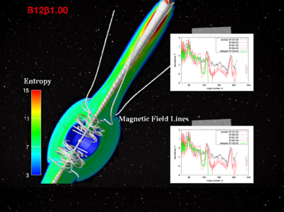

The r-process in Magneto-rotational driven Supernovae (MRD-SNe)

Description
Here, we provide numerical data of trajectories for nucleosynthesis
calculations, based on magneto-rotational driven supernovae (MRD-SN) models
of NTT15 (Nishimura, Takiwaki and Thielemann, ApJ, 2015).
Original data consist a large number of trajectories 1000 to 10000,
whose numerical convergence was discussd in a reference paper.
Although, we put here reduced sized data reduced by average method.
Data Files
- Trajectories
- NTT15p:
prompt-magnetic-jet model
- NTT15d:
delayed-magnetic-jet model
- Nucleosynthesis yields
- Abundances of r-process elements
References:
-
N. Nishimura, T. Takiwaki and F.-K. Thielemann,
ApJ (in press), arXiv:1501.06567
last updated: 07 Aug 2015